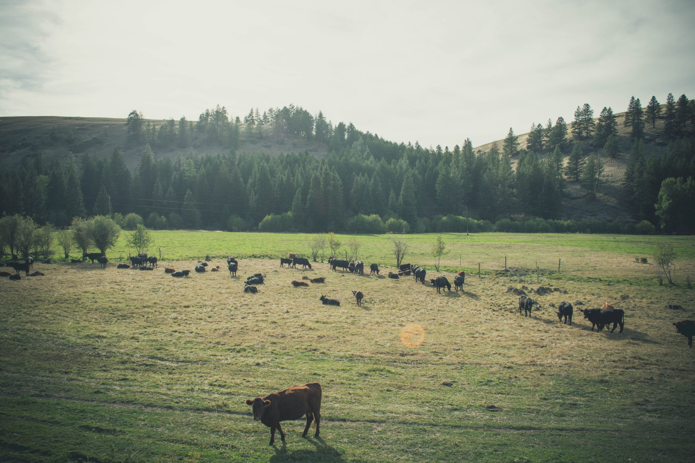
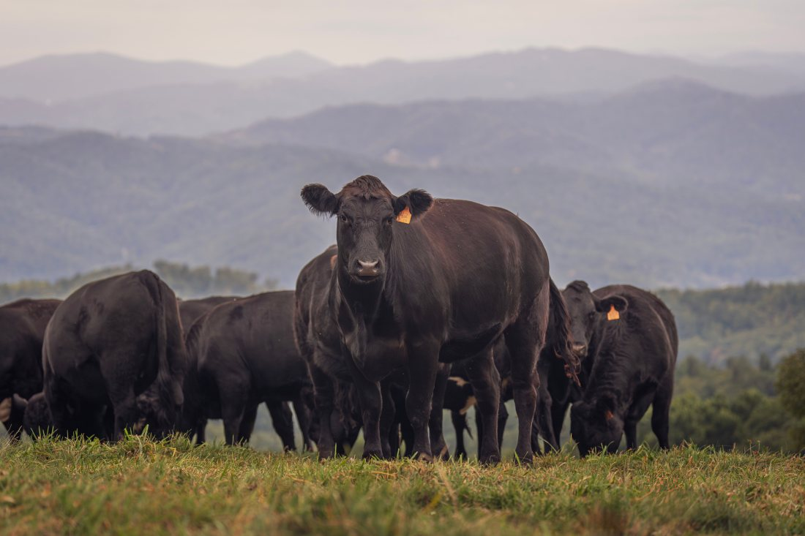
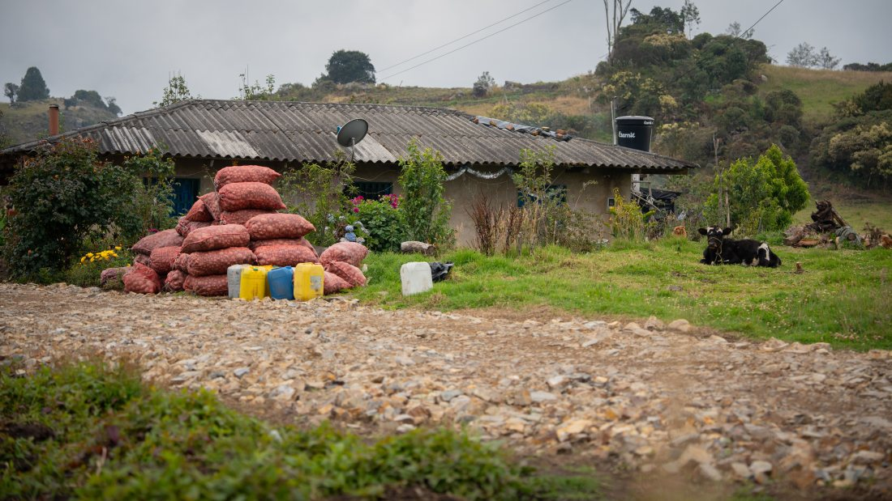
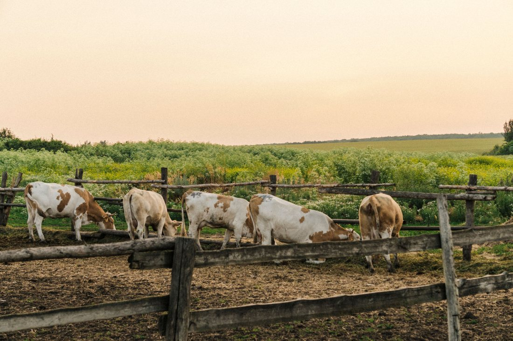
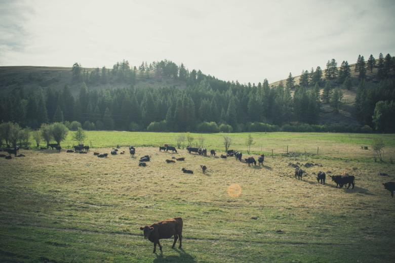
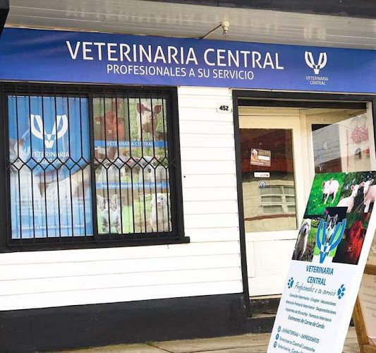

01
Qué animales
Vacuno, equino, ovino, porcino, aves. La lista de lo que sí y de lo que no, dicha de frente, es lo que hace que el campesino levante el teléfono sin dudar.
falta: la lista real
Propuesta de sitio web — preparada para Veterinaria Central por CristalWeb
Loncoche es mitad pueblo y mitad campo, y ninguna veterinaria de la zona dice por escrito si sale a ver un ternero enfermo o un caballo cojo. La primera que lo diga se queda con todo el campo. Esta página está construida para eso: el número es la página.
Campo
La salida a terreno no se agenda por formulario ni por Instagram: se pide por teléfono, y el que llama casi siempre tiene el animal echado al lado. Por eso el número está arriba, grande y solo — como el aviso clavado en el poste del cruce.
La pregunta del teléfono rural
Esta sección está vacía a propósito. No consta en ninguna parte si esta veterinaria atiende animales mayores —vacuno, equino, ovino—, hasta qué sectores sale ni qué cobra por la salida. Escribirlo por mi cuenta sería inventar, así que lo que está abajo es la estructura: los cuatro bloques que hay que llenar, con la única parte que sí es general del oficio ya escrita.
falta, y es lo primero que hay que preguntar: ¿atienden animales mayores?
01
Vacuno, equino, ovino, porcino, aves. La lista de lo que sí y de lo que no, dicha de frente, es lo que hace que el campesino levante el teléfono sin dudar.
falta: la lista real
02
Los sectores a los que salen, con nombre: los caminos que sí, los que dependen del estado del camino, y hasta qué distancia. En el campo la pregunta no es la comuna, es el kilómetro.
falta: los sectores y la distancia máxima
03
Que exista un costo de traslado no ofende a nadie: lo que molesta es enterarse cuando el veterinario ya está en el patio. Basta con decir si se cobra aparte y cómo se calcula.
falta: cómo lo cobran ustedes — acá no va ningún precio inventado
04
Esto sí es general del oficio y se puede escribir hoy — igual va firmado por quien atiende.
Con las tres primeras respuestas contestadas, esta página es lo único en la zona que le dice a un campesino si puede contar con ustedes. Nadie más lo tiene escrito.

Por qué la salida a terreno se pide por teléfono
Cuando hay un animal caído en el potrero, nadie llena un formulario y espera respuesta: se llama, se cuenta qué pasa y se pregunta a qué hora puede llegar alguien. Por eso en esta página el número va arriba, grande y solo — como el aviso clavado en el poste del cruce, que es donde la gente del campo lo busca.
Para la parcela con animales
No es un botiquín para tratar: es un botiquín para aguantar bien hasta que llegue el veterinario. Por eso acá no hay ni un remedio ni una sola dosis — eso lo indica quien atiende, con el animal a la vista.
Esta lista es general y no reemplaza ninguna indicación profesional. No incluye medicamentos a propósito: ningún fármaco, ninguna dosis y ninguna vía de administración deberían salir de una página web. Los remedios los indica el veterinario que ve al animal. Este texto lo escribió quien hizo el sitio y lo revisa y lo firma la clínica antes de publicarse.
Mitad pueblo, mitad campo
Y ninguna veterinaria de la zona lo dice por escrito
Para pedir una salida
Es el número publicado en su ficha de Google. En el campo, el teléfono es la página entera: todo lo demás son ganas de leer.



Estas seis ya aparecen más arriba en la página. Vuelven acá en otro tamaño porque una sola pasada de imágenes deja el scroll vacío, y porque de cerca se ven cosas que en grande se pierden. La procedencia de cada una está en imagenes/FUENTES.txt.


El 4,6 con 58 reseñas de su ficha de Google y el teléfono 9 6129 4464. No tienen sitio propio: sólo redes.
El bloque 04 —lo que hay que tener listo— y el botiquín. Son del oficio, no de ustedes, y van sin firma hasta que los revisen.
Tres respuestas, y son las tres que valen: si atienden animales mayores, hasta qué sectores salen y cómo cobran la salida. Los bloques 01, 02 y 03 están armados y vacíos esperándolas. Con eso publicado, son la única veterinaria de la zona que contesta la pregunta del campo.